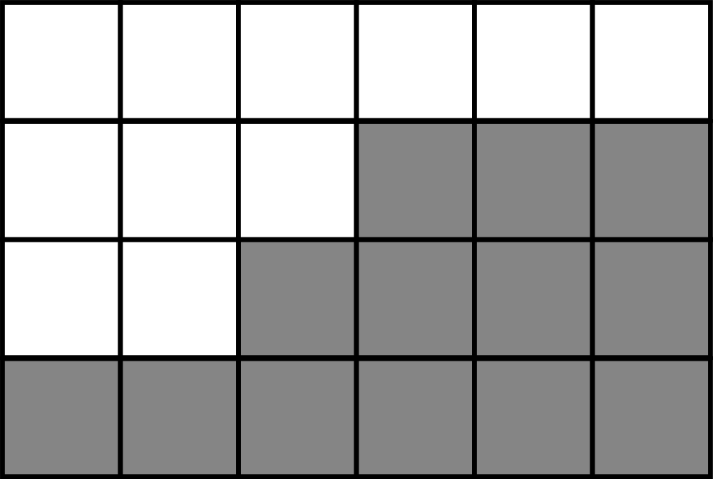
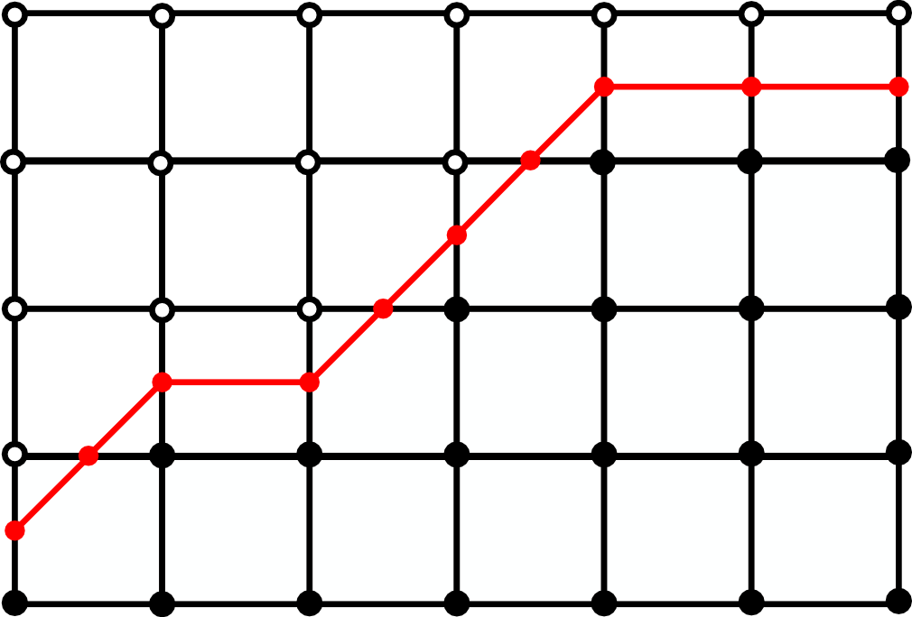
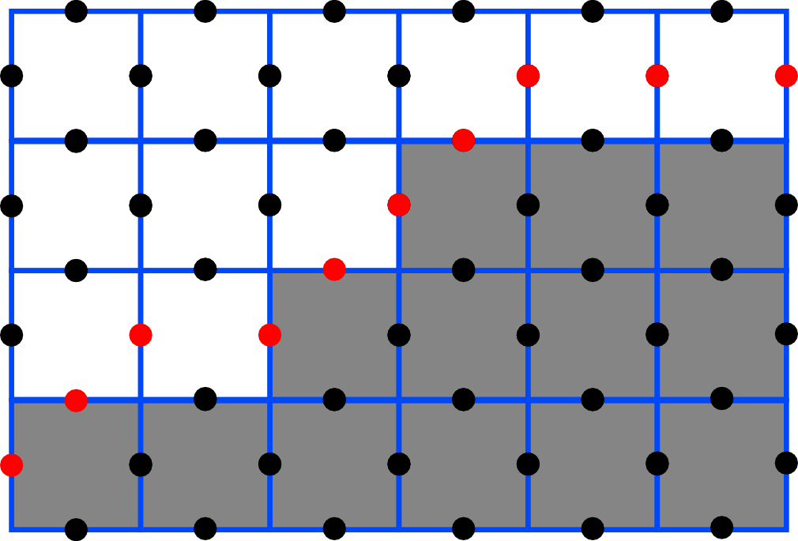
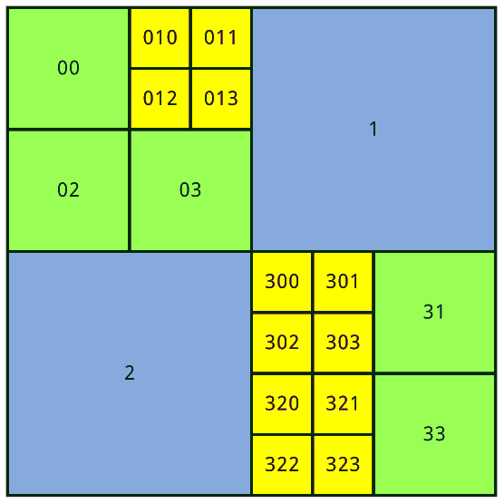
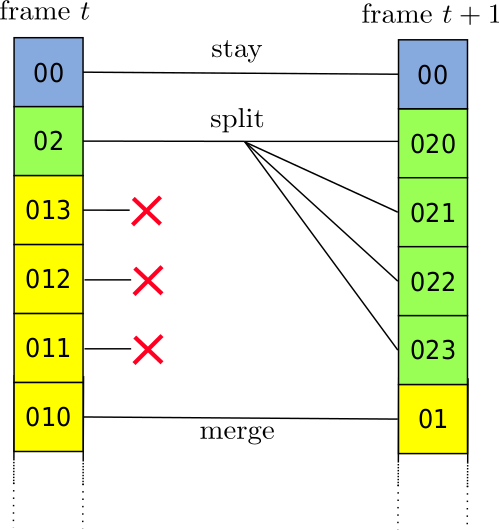
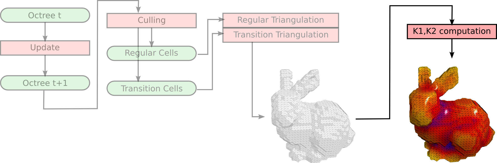
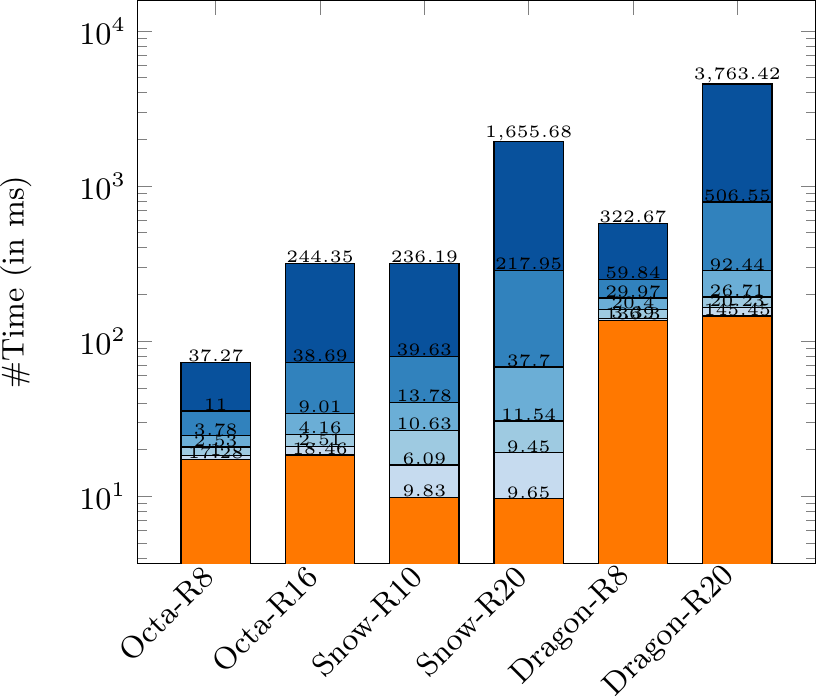

Interactive Curvature Tensor visualization
Helene Perrier
Jeremy Levallois
David Coeurjolly
Jean-Philippe Farrugia
Jean-Claude Iehl
Jacques-Olivier Lachaud

visualizing digital curvature

A long process
Curvature radius ?
Feature Detection[LCL14][LCL15]
How can we visualize digital curvature in interactive time ?

GPU implementation for on the fly curvature computation
Pipeline
Our pipeline runs in two steps ...
Extracting a mesh from the digital object
Compute the curvature value on each vertex of this mesh
Both those steps are done on the fly and in real-time,
thanks to the GPU parallelism !
Pipeline

Pipeline

Real Time GPU Isosurface Extraction
An extensively studied topic
However, most methods are heavy to implement
Or rely on caching strategies, preventing animated geometry
Here, we chose a more straightforward approach


Marching Cubes based [LC87]
Why Marching Cubes ?
-
GPU loves Marching Cubes
But a regular grid is too much to handle
Original Marching Cubes is made for regular grids only

Dual MC, Tetrahedral grid, ...
No highly parallel solution ?
Aligned with Khalimsky space
 
If you do your Marching cubes properly !
Transvoxels [Len10]
Sticks to the original marching cubes but uses an octree instead of the regular grid

Uses a modified Marching Cubes algorithm to patch the cracks
Transvoxels [Len10]
Transition cells

GPU really can't handle recursivity
How to put an octree on the GPU ?
Quadtrees on the GPU [DIP14]
Derecursifying a tree on the GPU
 
Isosurface Extraction
-
Real time
-
Adaptivity
-
Two Marching Cubes
-
Which is ok since we do not export the mesh.
Pipeline
Pipeline
Two approaches
Exact Computation
Slow
Exact
Approximated Computation
Fast
Approximated
Exact Computation
Sum all the digital points in the sphere
A LOT of texture accesses


The digital dataset is loaded on the GPU as a texture
Mipmaps !


Approximate Computation
Sum all the digital points in the sphere at a level L
Few texture accesses


Refinement over time
Keeping an exact curvature visualization while maintaining a real-time manipulation of the object
At each frame:
Approximate curvature at level L
If the object is moved { L=1 }
Else { L=L-1 }
Pipeline
Results

Orange : Adaptive isosurface extraction
Dark Blue : Exact curvature computation
Lighter Blue : Approximated curvature computation

1283
2333
5123
Demo !
Visualizing curvature
in real-time
refined to exact curvature
making it easy to explore parameters
thanks to the GPU !